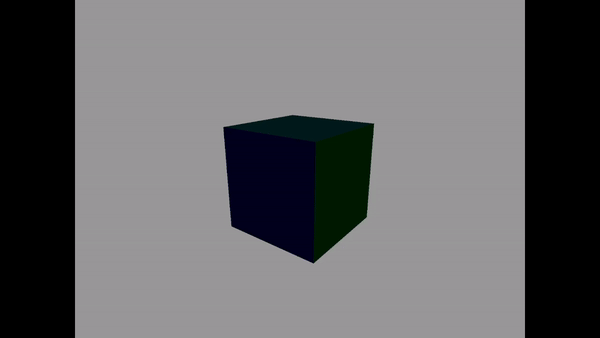

GL-Cube


Why did I do this project?
I started on this OpenGL project to challenge myself and expand my knowledge in 3D graphics programming, an area I've always been fascinated by. The project was an opportunity to apply theoretical concepts in a practical setting, pushing my understanding of rendering, transformations, and lighting in a real-time environment. It allowed me to explore the intricate dynamics of user interaction within 3D scenes, ultimately enhancing my proficiency in creating visually rich and interactive graphics applications.
Open GL
Getting into OpenGL for this project offered me a higher level experience with computer graphics, opposed to a Software Renderer I have made in the past. This project navigated through:
This project helped develop my technical skills in computer graphics by taking the time to understand what was happening at all times and not allowing modern tools and abstraction do the work for me.
Working With Vertex and Buffers
Getting to grips with handling the GPU through OpenGL was definitely a bit out of my comfort zone at first, but I got the hang of it pretty quickly. Essentially, OpenGL has this straightforward process where you generate a buffer, bind it, and then push data into it to send off to the GPU. The cool part is how you define what this data looks like, based on the layout of your mesh's vertices, and you use a "stride" to jump from one attribute to the next. OpenGL keeps track of all this using "IDs" that are pretty much like simplified pointers, counting up from 0, 1, 2, and so on.
When I set out to define the vertex layout for the GPU, I wanted to make sure it was something that could be easily reused and adapted. Here’s a peek at how I did it:
void BufferManager::CreateObjectOnGPU(const std::vector vertices, size_t vertexCount, const std::vector indices, size_t indexCount)
{
// Generate .. Bind .. Copy
glGenVertexArrays(1, &VAO);
glBindVertexArray(VAO);
glGenBuffers(1, &VBO);
glBindBuffer(GL_ARRAY_BUFFER, VBO);
glBufferData(GL_ARRAY_BUFFER, sizeof(Vertex) * vertexCount, vertices.data(), GL_STATIC_DRAW);
glGenBuffers(1, &EBO);
glBindBuffer(GL_ELEMENT_ARRAY_BUFFER, EBO);
glBufferData(GL_ELEMENT_ARRAY_BUFFER, sizeof(GLuint) * indexCount, indices.data(), GL_STATIC_DRAW);
// Position attribute
glEnableVertexAttribArray(0);
glVertexAttribPointer(0, 3, GL_FLOAT, GL_FALSE, sizeof(Vertex), (void*)0);
// Color attribute
glEnableVertexAttribArray(1);
glVertexAttribPointer(1, 4, GL_FLOAT, GL_FALSE, sizeof(Vertex), (void*)(sizeof(GLfloat) * 3));
// Texture Coordinates attribute
glEnableVertexAttribArray(2);
glVertexAttribPointer(2, 2, GL_FLOAT, GL_FALSE, sizeof(Vertex), (void*)(sizeof(GLfloat) * 7));
// Normals attribute
glEnableVertexAttribArray(3);
glVertexAttribPointer(3, 3, GL_FLOAT, GL_FALSE, sizeof(Vertex), (void*)(sizeof(GLfloat) * 9));
}
Transformations
I've been using Git as my preferred source control tool for some time, but my solo projects had not exposed me to the full potential of branching. Aware of its importance, I made a concerted effort to use branching during this project. This learning experience enabled me to effectively manage different development streams, creating dedicated branches for new features like drawing shapes, implementing save functionality, and freeform drawing. Each feature was developed in its branch and later merged into the main branch when it was ready for “production”.
Transformations in 3D space are not something foreign to me, but this part of the project still took the most amount of time. I was quickly able to get the transformations working with matrix multiplication since I've manually done all the math in a software renderer project before. The real challenge came when I started diving deeper and stumbled upon quaternions. I learned about their importance in avoiding gimbal lock—a situation where, in certain orientations, you lose a degree of freedom in rotation, making it impossible to rotate around one axis due to the alignment of two of the three axes.
Unlike the straightforward approach of matrix multiplication, quaternions operate in a four-dimensional space, which was initially a tough concept to grasp. I spent time learning about quaternion algebra, how to represent rotations as quaternions, and how they interpolate smoothly between rotations (slerp). The learning curve was steep, involving complex numbers and understanding how quaternions are normalized to maintain their rotational properties. Although I wouldn't say I have mastered the math concept, I developed an understanding of implementation and let the glm library help me wih the rest.
Textures
Texture mapping in 3D graphics involves applying a 2D image onto the surface of a 3D model, a technique crucial for adding detailed visuals to objects in real-time rendering without the need for complex geometry. The implementation process in OpenGL begins with modifying the vertex layout to include 2D texture coordinates. These coordinates direct the GPU on how to align the texture over the 3D object's surface. Following this, the image file is loaded and passed to the shader as a Sampler2D uniform. Finally, the texture is applied to the mesh using the GLSL texture() function, significantly enhancing the mesh's visual detail with minimal geometric complexity.

Lighting
Lighting fundamentally transforms the visual fidelity of 3D rendering, becoming an essential element in achieving the desired aesthetic. Integrating lighting into my project marked a significant milestone, not only elevating the visual impact but also becoming a highlight of the development process. My previous endeavors with flat shading only scratched the surface of lighting's potential. In this project, I ventured further towards realism by making three types of lighting: ambient, diffuse, and specular.
Achieving this lighting effect required a blend of linear algebra and vector mathematics, simplifiying the complexity in realistic lighting simulations. While the scope of lighting in 3D graphics extends beyond the bounds of my current implementation, delving into ambient, diffuse, and specular lighting has provided a solid foundation and an introduction to the intricate world of 3D rendering illumination.